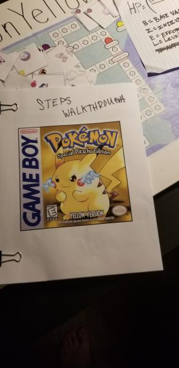
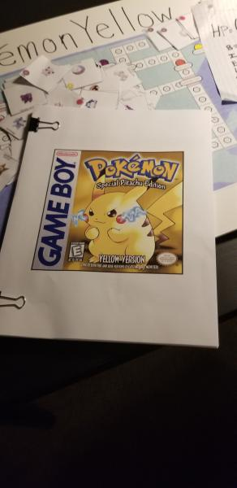
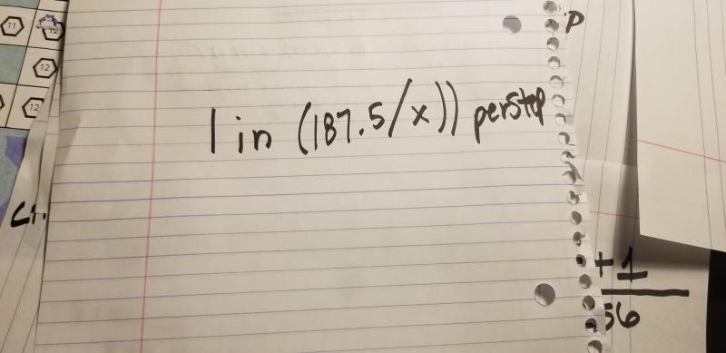
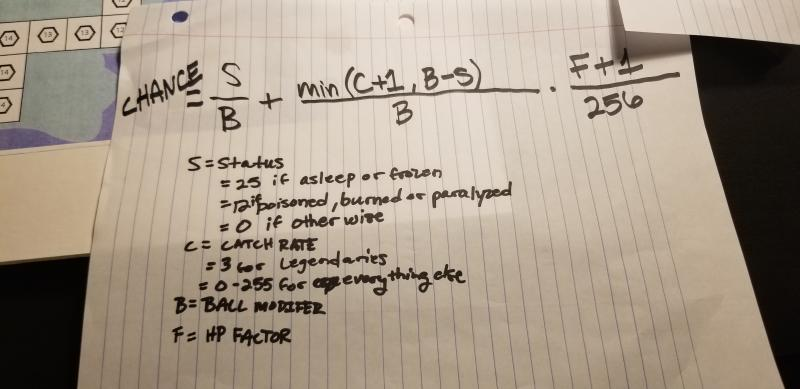
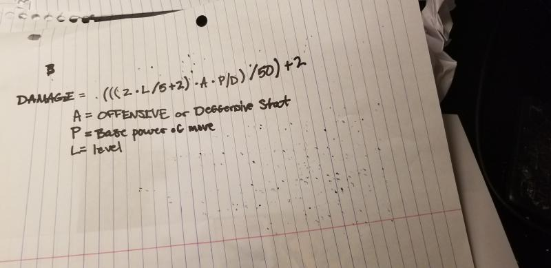
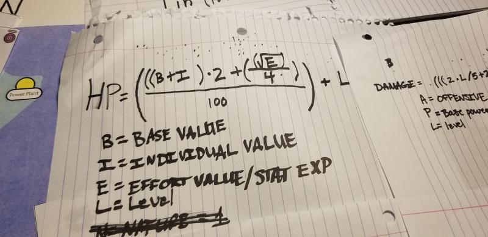
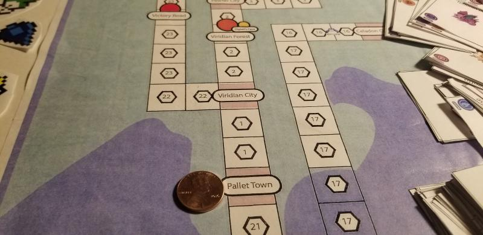
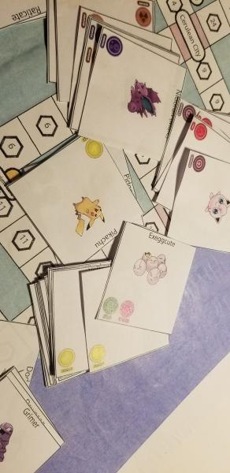
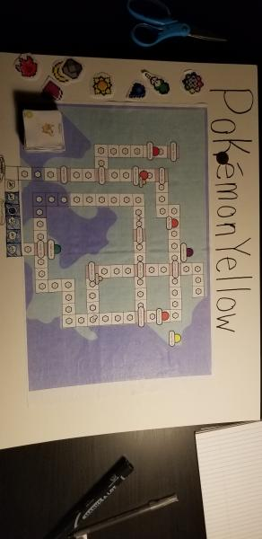

This is a prototype of Pokemon Yellow Version. We primarily focused on the battle, encounter, and capture mechanics in the game. The game over all stresses the complex mathematical formulas that are taken into consideration when calculating a pokemon's HP, Damage, catchability, and encounter rate.
The below images are of our game.
        